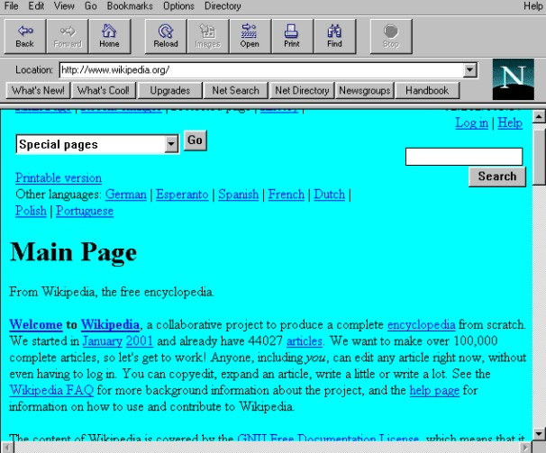

Qualifica Blog | Blog
A história do CSS
No inicio, o HTML era a única linguagem utilizada para criar sites. Quando começou a ganhar popularidade, algumas tags (comandos) foram criadas pelos navegadores para facilitar o uso da linguagem; Para facilitar ainda mais a criação destes layouts, a W3C (World Wide Web Consortium) criou o CSS, colocando a disposição dos Webdesigners. O CSS é uma linguagem que determina a aparência (layout) de paginas para a Web. Este programa permite ao usuário criar paginas da Web com códigos mais fáceis de elaborar que os códigos HTML. Estes códigos permitem fazer as aplicações com facilidade. Este programa é utilizado pelos programadores em todo o mundo. O CSS controla as opções de margem, linhas, cores, alturas, larguras, imagens e posicionamento, sem necessidade de programar em HTML. O CSS tem também alguns códigos prontos, permitindo aos usuários pouparem tempo criando códigos muito comuns.
06/09/2021
A história do HTML
Em 1980, o Físico Britânico Tim Berners-Lee, iniciou um projeto baseado na Marcação de HiperTexto, denominado ENQUIRE. Este projeto foi realizado inicialmente através da linguagem de programação Pascal. Anos mais tarde, em 1889, Tim Berners-Lee e o estudante Robert Cailliau conseguiram implementar a primeira comunicação entre o usuário e servidor através do protocolo HTTP. Com isso, surgia então a World Wide Web (www), a web que conhecemos hoje. Com o objetivo de facilitar comunicação e disseminação de documentos entre pesquisadores, ele criou então a linguagem de marcação de hipertexto, o HTML. A sua primeira versão foi publicada em 1991 e foi baseada na SGML, uma linguagem de marcação utilizada para a estruturação de documentos. O SGML já possuía diversas tags que foram herdadas pelo HTML. Contudo, a maior diferença entre essas duas linguagens, é que o HTML implementava a tag , permitindo a ligação de uma página a outra, conhecido como link. A interligação entre documentos é a base do funcionamento de toda Web. A linguagem de marcação de hipertexto ficou bastante conhecida quando começou a ser utilizada para formar a rede pública daquela época. Alguns anos mais tarde, se tornaria a linguagem padrão da internet que conhecemos hoje.
06/09/2021
Historia Js
O JavaScript foi criado na década de 90 por Brendan Eich a serviço da Netscape. Essa década foi um período de revolução, pois os browsers ainda eram estáticos. O navegador mais popular dessa época era o Mosaic, da NCSA. NCSA Mosaic. O navegador mais popular da década de 90. NCSA Mosaic. O navegador mais popular da década de 90. A Netscape foi fundada em 1994 para explorar a Web que estava surgindo. Foi então criado o Netscape Navigator. Em pouco tempo, este se tornou o browser dominante nessa década. Muitos desenvolvedores da NCSA foram designados no projeto do Navigator.Netscape Navigator: tirou a coroa do NCSA Mosaic. Netscape Navigator: tirou a coroa do NCSA Mosaic. A Netscape chegou à conclusão que a web teria que se tornar mais dinâmica, pois o Navigator tinha sempre que fazer uma requisição ao servidor para obter uma resposta no navegador. Em 1995, a Netscape contratou Brendan Eich para criar uma linguagem que proporcionasse isso. A proposta inicial era a implementação da linguagem Scheme, baseada em LISP, puramente funcional, no Navigator. Porém a Netscape tinha projetos anteriores em conjunto com a Sun Microsystems para colocar sua mais recente e promissora linguagem de programação, o Java, no Navigator. Isso elevou uma discussão interna do motivo de ter duas linguagens.Obviamente predominou a escolha de uma única linguagem com a sintaxe baseada em Java. O argumento foi que o Scheme, por ter uma sintaxe e complexidade características de linguagens funcionais, se tornaria impopular (veja o código abaixo). O objetivo da Netscape com a nova linguagem era exatamente o oposto. Mesmo com sintaxe “javanesa” e com outras características do Java (valores primitivos e objetos), o JavaScript logo de início sofreu a influência funcional do Scheme, e mais tarde de linguagens como o Self (protótipos), Perl e Python (Strings, arrays e expressões regulares). Para defender o JavaScript contra outras propostas, um protótipo foi criado por Eich em dez dias, em Maio de 1995. Marc Andreesen nomeou o protótipo de Mocha. O nome da linguagem mudou de novo para LiveScript por causa de patentes e porque vários produtos estavam levando o “Live” como sufixo.Brendan Eich: o criador do JavaScript e ex CEO da Mozilla. Brendan Eich: o criador do JavaScript e ex CEO da Mozilla. No final de Novembro de 1995, a versão 2.0B3 do Navigator saiu com a versão “de dez dias” sem muitas alterações. No começo de Dezembro de 1995, o Java estava no seu ápice e a linguagem foi renomeada para JavaScript.
06/09/2021